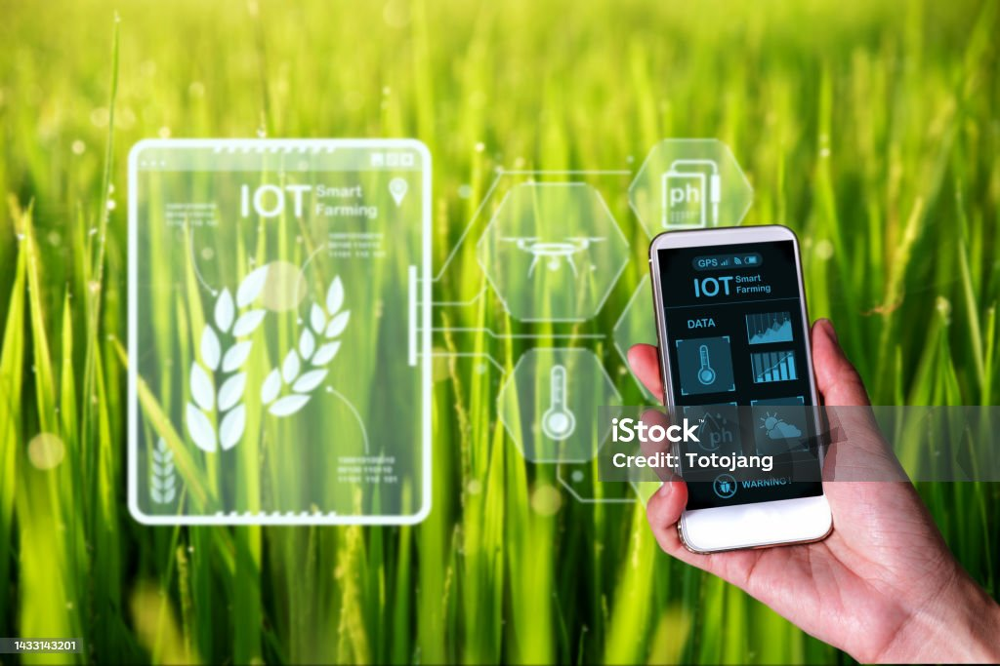
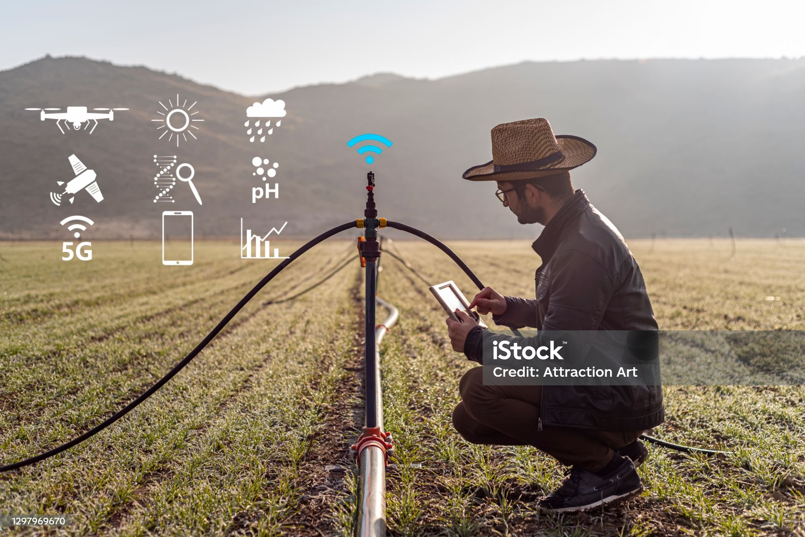

Welcome to AgroClouds

Real-time crop monitoring using IoT and imaging.

Powerful farm analytics from the cloud to your field.

Real-time crop monitoring using IoT and imaging.

Powerful farm analytics from the cloud to your field.